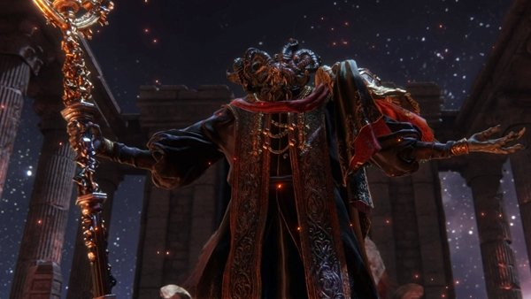

Two of Marika and Godfrey's three demigod children in Elden Ring are Omens, born bearing a curse that the Golden Order considers unacceptable. As such, Mohg and his brother, Morgott, are shunned by their siblings. It's implied that nobody except their father holds any love for them whatsoever. Whereas Morgott responded with fervent loyalty, Mohg chose to forge his own path (https://www.cbr.com/every-demigod-elden-ring-explained/)
Quotes on Mohg
"Welcome, honored guest. To the birthplace of our Dynasty!"
"Dearest Miquella. You must abide alone a while. Welcome, honored guest. To the birthplace of our dynasty!"